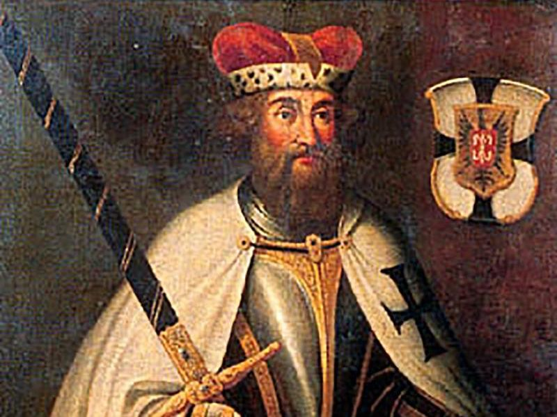
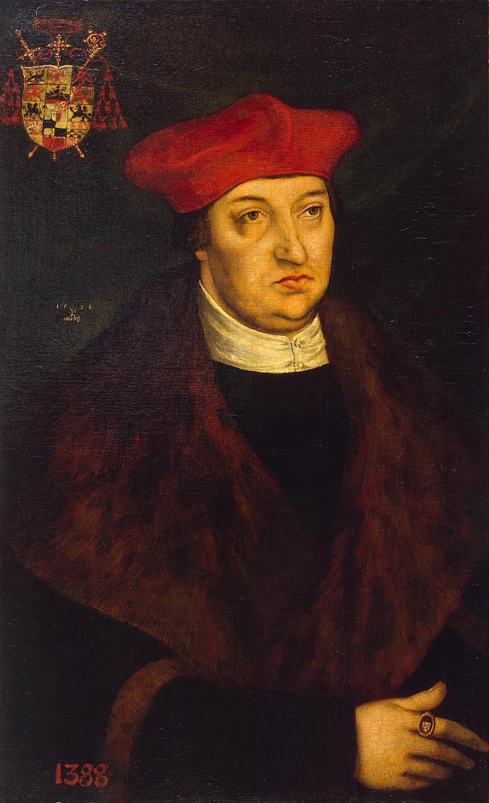
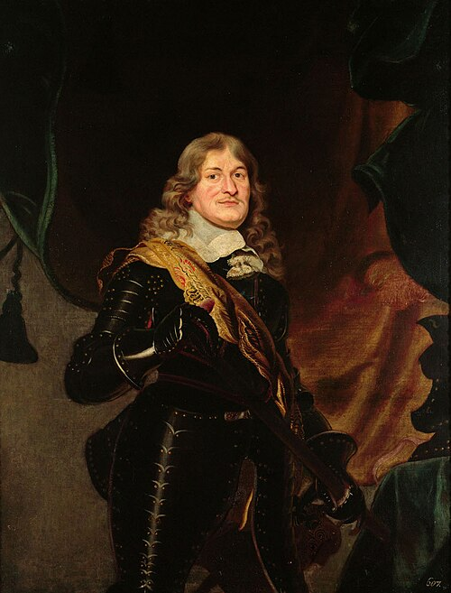
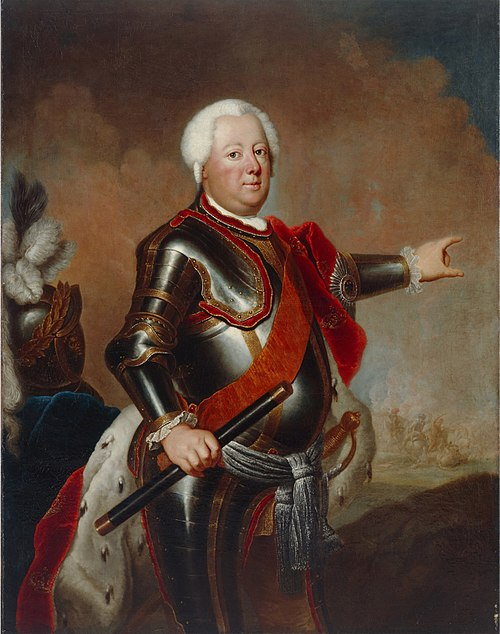
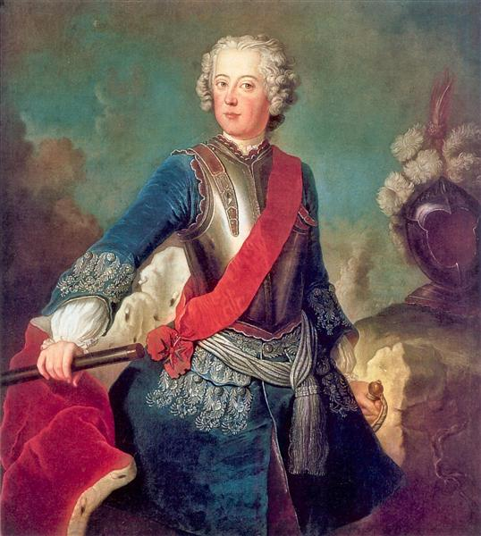
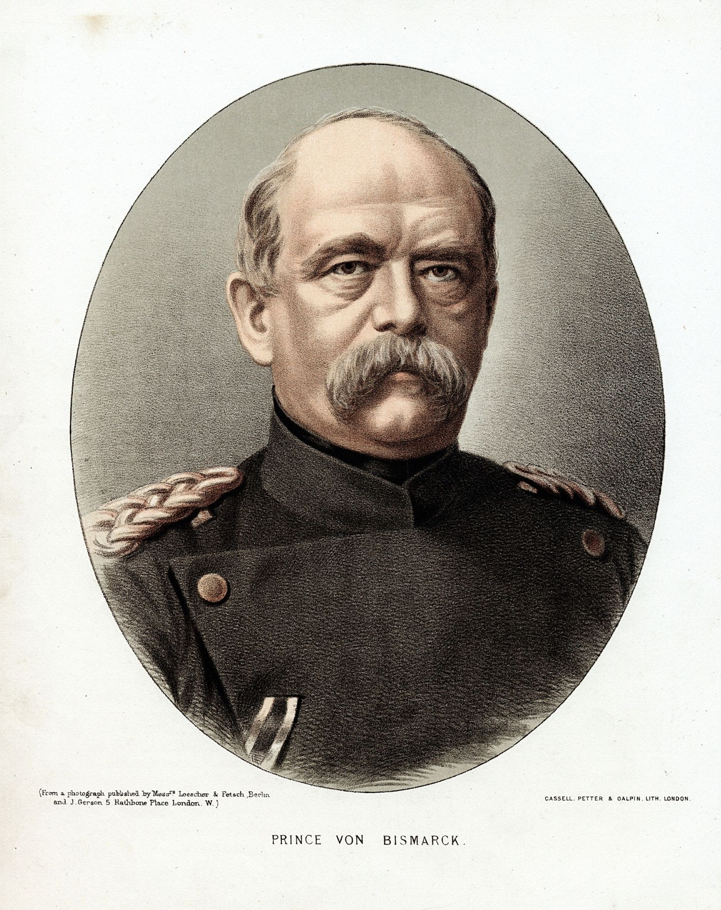

Hermann von Salza
As Grand Master of the Teutonic Order, von Salza used diplomatic skill to secure Papal and Imperial authorization for the Prussian Crusade. He gained the Golden Bull of Rimini (1226), which legally established the Order’s full sovereignty over any lands they conquered, thus founding the political entity known as the Monastic State (Ordensstaat).

Albert of Hohenzollern
Albert was the last Grand Master who initiated the Secularization of 1525 during the Reformation. He converted to Lutheranism, dissolved the Catholic monastic state, and transformed it into the hereditary, secular Duchy of Prussia. This move ensured the state's survival and established it as the world's first official Lutheran state, later setting the stage for the rule of the Brandenburg Hohenzollerns.

Frederick William, the Great Elector
The "Great Elector" united the disparate Brandenburg-Prussia territories, creating the first permanent standing army and a centralized administration. His crowning achievement was securing full sovereignty for the Duchy of Prussia from the Polish Crown in 1660, removing the last vestiges of foreign feudal control and laying the foundation for the future Kingdom.

Frederick William I (The Soldier King)
He was the architect of the Prussian military state, creating the highly disciplined and powerful army that defined the Kingdom. He also established the efficient, centralized bureaucracy and ensured the state's financial solvency. Though he avoided major wars, he bequeathed his son a large, well-trained army and a full treasury, ready for use.

Frederick II (Frederick the Great)
Frederick II elevated Prussia to a European Great Power by immediately invading and conquering the wealthy region of Silesia from Austria. He was a military genius who successfully defended his acquisitions in the Seven Years' War. As an Enlightened Absolutist, he implemented legal and social reforms while vigorously promoting the arts and sciences.

Otto von Bismarck
The "Iron Chancellor" was the political mastermind who used the Prussian military (Realpolitik) to achieve the unification of Germany. Through calculated wars against Denmark, Austria, and France, he brought the smaller German states under Prussian leadership. His efforts culminated in the establishment of the German Empire in 1871, with the Prussian King as Emperor.